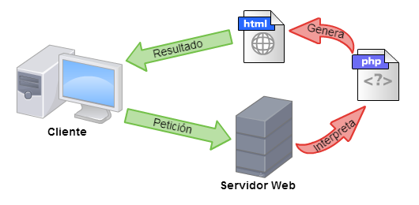

PHP
¿Que es PHP?
PHP es un lenguaje de programación de código
abierto utilizado en el lado del servidor para crear
páginas web dinámicas. Originalmente, su abreviatura
significaba "Personal Home Page Tools", pero ahora se
refiere a "PHP: Hypertext Preprocessor". A diferencia
de los lenguajes del lado del cliente como HTML, CSS y
JavaScript, PHP se ejecuta en el servidor web y genera
código HTML que se envía al navegador. El navegador
recibe el resultado de la ejecución de los scripts de
PHP en lugar del código PHP real.
¿Como funciona PHP?
Como sabemos PHP se ejecuta en el servidor, los pasos que sigue para funcionar hace son los siguientes:
- Solicitud del cliente: Un usuario abre su navegador y escribe la URL de un sitio web o hace clic en un enlace. Esta acción genera una solicitud al servidor web para obtener una página web.
- Servidor web recibe la solicitud: El servidor web recibe la solicitud del cliente y verifica si el archivo solicitado contiene código PHP. Los servidores web están configurados para manejar extensiones de archivo específicas, como ".php".
- Activación del intérprete PHP: Si el archivo solicitado es un archivo PHP, el servidor web activa el intérprete de PHP. Este intérprete es una parte del servidor que comprende y ejecuta el código PHP.
- Procesamiento del código PHP: El intérprete de PHP analiza el archivo PHP en busca de bloques de código PHP delimitados por . Luego, ejecuta este código en el servidor. Durante la ejecución, PHP puede realizar diversas tareas, como conectarse a bases de datos, realizar cálculos, procesar formularios y más.
- Conexión a bases de datos: Si el código PHP incluye operaciones de base de datos, PHP se conecta a la base de datos correspondiente, como MySQL o PostgreSQL, para recuperar o almacenar datos según sea necesario.
- Respuesta al cliente: Una vez que se ha procesado el código PHP y se ha generado el contenido, el servidor web envía la página resultante al navegador del cliente como una respuesta a la solicitud original.
- Renderización en el navegador: El navegador del usuario recibe la página web completa, incluido el contenido HTML, CSS, JavaScript y otros recursos, y luego la renderiza para que el usuario la vea y pueda interactuar con ella.

Frameworks que se usan
Laravel
Proporciona una estructura y conjunto de herramientas que facilitan la creación de aplicaciones web modernas y eficientes.
Laravel incluye características como enrutamiento, manejo de bases de datos, autenticación de usuarios, plantillas Blade, y muchas otras utilidades que hacen que el desarrollo web sea más rápido y sencillo.

Symfony
Symfony es otro popular framework pero a diferencia de Laravel, Symfony está basado en PHP y se centra en proporcionar componentes y bibliotecas flexibles para el desarrollo de aplicaciones web y aplicaciones empresariales.
Proporciona una estructura y conjunto de herramientas que facilitan la creación de aplicaciones web modernas y eficientes.

Yii
Se centra en la eficiencia y el alto rendimiento. El nombre "Yii" es un acrónimo de "Yes, It Is!" (¡Sí, lo es!), lo que refleja su enfoque en la simplicidad y la facilidad de uso.
Yii proporciona una amplia gama de características y herramientas que son útiles para el desarrollo web, como el manejo de bases de datos, la gestión de sesiones, la autenticación de usuarios y la generación de código automático.
Es conocido por su capacidad de generar código limpio y eficiente, lo que lo hace especialmente adecuado para aplicaciones web de alto rendimiento.
Phalco
Lo que hace que Phalcon sea único es que está escrito en lenguaje C y se compila como una extensión de PHP, en lugar de ser puramente código PHP.
Esta implementación específica permite a Phalcon ofrecer un alto rendimiento y velocidad en la ejecución de aplicaciones web.
Phalcon es adecuado para desarrolladores que desean construir aplicaciones web en PHP que requieran un alto rendimiento y escalabilidad.
.png)
Ecommerce
los ecommerces necesitan una comunicación constante con bases de datos llenas de elementos importantes, como imágenes y videos de productos.
Esta comunicación puede hacer que las páginas se vuelvan lentas si no se maneja adecuadamente.
se destaca como una alternativa efectiva para evitar problemas de rendimiento en las tiendas online, y muchas plataformas de desarrollo de tiendas en línea ya utilizan PHP como lenguaje principal para programar su backend.
Ventajas
-
Es fácil de aprender: PHP es un lenguaje cuya curva de aprendizaje es baja y comprensible. Su red de tutoriales, videos, códigos documentados y gran comunidad simplifican el proceso de aprendizaje.
- Se adapta al lenguaje HTML: con respecto al desarrollo de páginas web y aplicaciones complejas, este lenguaje es perfecto, pudiendo adaptarse al lenguaje HTML, para crear un código mucho más sólido y dinámico.
- Es fácil para instalarse en los servidores o sistemas operativos: cada entorno de desarrollo posee un alto porcentaje de configuración, y el acceso a la base de datos es rápido y sencillo.
- Permite automatizar tareas: existen algunas tareas que los developers tienen que hacer cuando desarrollan una web que pueden ser automatizadas fácilmente con este lenguaje.
Desventajas
- Aprender sobre framework de PHP: si bien tener entornos de trabajo o frameworks permite añadir funciones sin escribir código adicional, para un desarrollador esto supone tener que aprender las utilidades del framework.
- Mala calidad de manejo de errores: una de las principales desventajas de PHP es que no tiene herramientas de depuración, que son necesarias para buscar errores y advertencias.
- Seguridad baja: PHP es uno de los lenguajes de programación menos seguros. Para garantizar la seguridad de los datos, debes tener conocimientos técnicos profundos y/o trabajar con SQL.
- Se necesita un servidor web: para ejecutar el software en Internet hay que contar con un hosting.